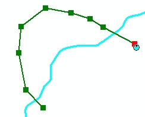

Custom reshape polyline edit task
Purpose
This sample illustrates how to create a custom ArcGIS Engine edit task that can be used in conjunction with the out-of-the-box editing commands. The Reshape Polyline edit task allows the user to perform a reshape on the selected feature within an edit session.
Usage
- Build and run the sample.
- Start editing.
- Zoom in on a polyline feature that you want to reshape.
- Select this feature with the Edit tool.
- Select the Reshape Polyline edit task from the Edit Task Tool control.
- Using the Sketch tool, digitize a new line that intersects the selected feature in at least two places.
- Finish the sketch to perform the reshape.
- Stop editing and save edits to persist changes. See the following illustration:

Illustration of performing a reshape on the selected feature.
Additional information
The edit task is created by implementing the IEngineEditTask interface. Compiling this sample registers the edit task in the ESRI Engine Edit Tasks component category, which is used to populate the ControlsEditingTaskToolControl at runtime. The position of the task within the ControlsEditingTaskToolControl list is controlled using the IEngineEditTask.GroupName property and the display name using the IEngineEditTask.Name property. The IEngineEditTask.Activate method is called when the end user selects the edit task in the ControlsEditingTaskToolControl. The Activate method is used to set up listeners to the following IEngineEditEvents:
These event listeners set the IEngineEditSketch.GeometryType to null if the following conditions are met, thereby, disabling the Sketch tool:
The IEngineEditLayers.TargetLayer property on the EngineEditor singleton is used to return to the target layer selected in the ControlsEditingTargetToolControl. The IEngineEditTask.OnFinishSketch method is used to reshape the geometry of the selected feature using the IPolyline.Reshape method, passing in a path created from the digitized sketch as an argument. The task calls the IFeature.Store method within an edit operation to commit the changes.
See Also
EngineEditorClass
Licensing
| Development licensing | Deployment licensing |
|---|
| Engine Developer Kit | Engine |
| | ArcGIS for Desktop Basic |
| | ArcGIS for Desktop Standard |
| | ArcGIS for Desktop Advanced |